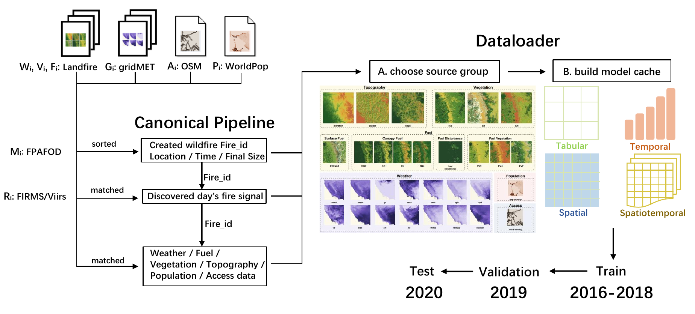

Discovery-time information only.
The benchmark links FPA-FOD wildfire events with FIRMS/VIIRS, gridMET, LANDFIRE, OpenStreetMap, and WorldPop while excluding outcome-derived and post-discovery leakage.
WildfireIA defines a reproducible event-level benchmark for predicting whether a wildfire will escape initial attack using public information available at fire discovery time.
Initial attack failure is an event-level triage problem. Existing studies often rely on regional records, private operational variables, or incompatible evaluation choices. WildfireIA standardizes the task so public discovery-time inputs and model families can be compared under the same rules.
The benchmark links FPA-FOD wildfire events with FIRMS/VIIRS, gridMET, LANDFIRE, OpenStreetMap, and WorldPop while excluding outcome-derived and post-discovery leakage.
The input contract fixes sample units, labels, splits, source groups, forbidden columns, representations, and metrics so models can be compared horizontally.
The release provides canonical tables and code to regenerate tabular, temporal, spatial, and spatiotemporal caches without relying on hidden preprocessing steps.
WildfireIA separates canonicalization from model-cache generation. The same canonical tables can be reused to build different input protocols, ablations, and representation families.

The experiments are designed to test what public near-discovery data can and cannot explain, which sources matter, and whether the same input contract generalizes beyond binary IA failure.
Public discovery-time data contains meaningful but incomplete signal. XGBoost reaches 53.3% AUPRC over five seeds, while spatial and spatiotemporal models remain competitive but do not dominate event-level summaries.
FIRMS/VIIRS is the least redundant source. Removing discovery-day thermal evidence causes the largest AUPRC drop across representative models.
Fuel is the strongest static fallback source when weather history and discovery-day satellite detections are unavailable, but static context alone remains insufficient.
Longer weather histories do not consistently improve prediction. The strongest weather-only signal is usually concentrated near discovery day.
Discovery-time inputs contain some severity signal, but containment duration is weakly explained, suggesting that post-discovery resources, tactics, and fire evolution dominate this target.
WildfireIA evaluates tabular, temporal, spatial, and spatiotemporal prediction families with standardized metrics, prediction schemas, and output directories.
Tabular models use event-level feature vectors. Temporal models use five-day weather and fire-danger sequences with static features. Spatial models use 29 x 29 event-centered patches. Spatiotemporal models use five-day patch sequences.
Initial attack failure uses AUPRC, AUROC, Recall@5%, F1, Brier score, ECE, and standardized prediction files. Containment duration uses log-space training with hour-scale MAE, RMSE, MedianAE, R2, and Spearman correlation.
The Hugging Face release stores canonical benchmark tables. The GitHub repository regenerates model-ready caches and runs all supported baselines.
git clone https://github.com/LabRAI/WildfireIA.git
cd WildfireIA
python -m venv .venv
source .venv/bin/activate
pip install --upgrade pip
pip install -r requirements.txt
python - <<'PY'
from huggingface_hub import snapshot_download
snapshot_download(
repo_id="WildfireIA/Anonymous-WildfireIA",
repo_type="dataset",
local_dir="hf_data",
)
PY
mkdir -p data/canonical/raw_feature_tables
rsync -a hf_data/data/canonical/raw_feature_tables/ data/canonical/raw_feature_tables/
python dataloader.py \
--base_dir . \
--canonical_dir data/canonical/raw_feature_tables \
--output_dir data/cache/model_ready \
--task ia_failure \
--representation all \
--weather_days 5 \
--input_protocol all \
--overwrite
python train.py \
--base_dir . \
--task ia_failure \
--experiment_type smoke \
--representation tabular \
--weather_days 5 \
--input_protocol all \
--model xgboost \
--seed 553371 \
--overwriteThe release is organized so researchers can either reproduce the paper protocol or build new model and source-combination experiments from the same canonical benchmark.
Please cite the benchmark if you use the data release, cache builder, input contract, evaluation protocol, or baseline results.
@misc{xu2026wildfireia,
title={A Nationwide Benchmark for Wildfire Initial Attack Failure Prediction with Public Environmental Data},
author={Xu, Runyang and Cheng, Xueqi and Dong, Yushun},
year={2026},
note={Preprint},
url={https://github.com/LabRAI/WildfireIA}
}